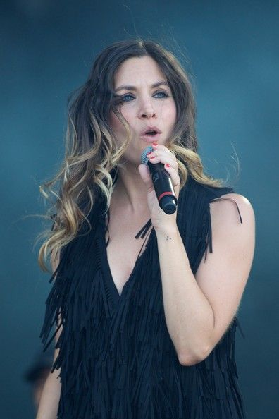

Conoce a LODVG
Somos LODVG
HOLA
Leire: una cantante única

Leire es la cantante de LODVG. Le encanta cantar sin parar. Sus padres cuentan que aprendió a cantar antes que hablar
También toca la guitarra y está aprendiendo a tocar la bateria
Xabi San Martín: el señor del teclado
Xabi lleva la música en la sangre desde que nació. Sus padres eran músicos y le regalaron su primer teclado con cinco años. En algunas canciones toca el teclado y además, canta.
Pablo Benegas: el genio de la guitarra
Pablo tiene el don de la guitarra desde pequeñito. Su primer regalo fue una guitarra.
Álvaro Fuentes: concocido graciosamente como el chico del bajo
Aunque es muy callado, escucharlo tocar el bajo no tiene precio
Haritz Garde: el protagonista del ritmo
Sus redobles tienen fama de ser los mejores